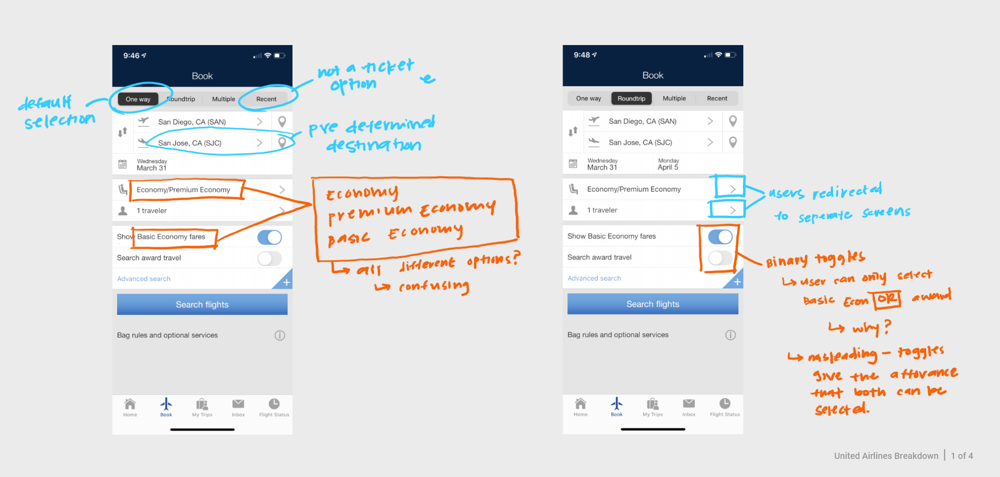

Contact
Let's stay connected!
Feel free to contact me if you want to work together, learn more about my projects, or talk about plants! You can email me at jzbtse@gmail.com, or find me on LinkedIn

| Role | UI Designer |
| Goal | Enhance the visual experience of United Airlines’ mobile experience to streamline customer experience and maintain brand identity |
| Timeline | November 2019 - December 2019 |
| Skills | UI Design, Prototyping, Pattern Design, User Flow, Needfinding, Brand Identity, Prototyping |
| Tools | Figma, Lucid Chart |
United Airlines is one of the largest airline companies based in the United States. In 2019, United Airlines launched a new version of their mobile app. It was an all-in-one application for travelers to access United flights, view itinerary, check in, etc. This redesign gained positive feedback from the community; however, it still lacked a few key features that would streamline the user’s experience.
The goal of redesigning United Airlines’ mobile application was to streamline the ticket buying experience and to reinforce the brand identity. This study focuses on UI patterns and the ticketing process.
First, I studied the United Airlines mobile app to analyze and understand the current UX workflow and to identify requirements.
Second, I created visual UI designs of the app and ensured that it followed design heuristic patterns.
Lastly, I developed an interactive prototype for demonstration and testing purposes.
To understand the current UX workflow of the ticket buying process, I went through the mobile app and mapped out the current user actions.



From this exercise, I identify areas of opportunities and noticed two major issues:
To understand the current UX workflow of the ticket buying process, I went through the mobile app and mapped out the current user actions. From this exercise, I identify areas of opportunities and noticed two major issues:
Feel free to contact me if you want to work together, learn more about my projects, or talk about plants! You can email me at jzbtse@gmail.com, or find me on LinkedIn